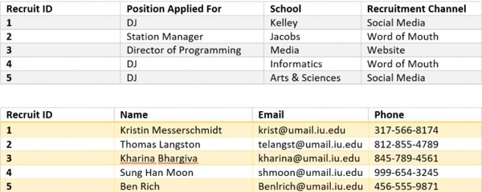

We were contacted to solve a serious problem within the Indiana University radio station. College students are a key audience for the station and ensuring that the DJs representing IU radio reflect the demographics of campus. We found through primary research that almost all radio hosts for IU radio come from the Media and Jacobs schools leaving most student interests under represented (Primary research). In fact, the leading reason radio stations across America are losing listeners is a lack of diversity in programming and on-air personalities (Picard). Because the demand for academically diverse demographic of DJs is so high we implemented the Radio Technology Initiative.
The Radio Technology Initiative is a database we created to streamline IU radio's marketing efforts and track IU radio's DJ staff to ensure they reach every academic school on campus. With this program, we will be using an Access database to effectively track the progress of recruitment efforts. The database tracks each recruiting campaign that IU radio uses: social media, direct marketing, and online advertising to continuously evaluate how effective each campaign. As students respond to recruiting efforts the channel they were reached through and their field of study are captured. Using SQL queries IU Radio can easily determine who they reached, how they reached them, and where the recruits came. This solution provides the perfect way to get up to the minute feedback on effectiveness of different recruiting avenues. Implementing the Radio Technology Initiative ensures IU radio can make the most effective use of their resources and ensure they are reaching a wide range of demographics.
By implementing this database IU radio can reach the core demographic of college students most effectively and give them the programming they demand. These students want the opportunity to be informed on a variety of different issues and schools on campus. When asked, college students ranked a variety of content and information from all areas of campus as the most important factor when selecting a station to listen to (Best Colleges). This solution works well to give IU students the programming they demand and ensure that IU radio's DJ's come from a variety of backgrounds.
There are many reasons we believe IU Radio will be excited about this initiative. It allows them to seamlessly track all of their outreach across campus to determine what campaigns are most effective at reaching the most diverse group of people. This will streamline costs as they can limit marketing that adds no value and invest in avenues that reach the most diverse set of recruits.